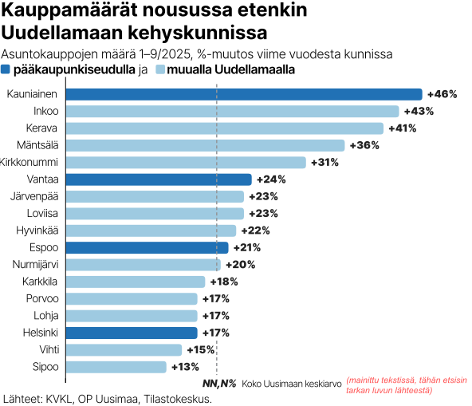
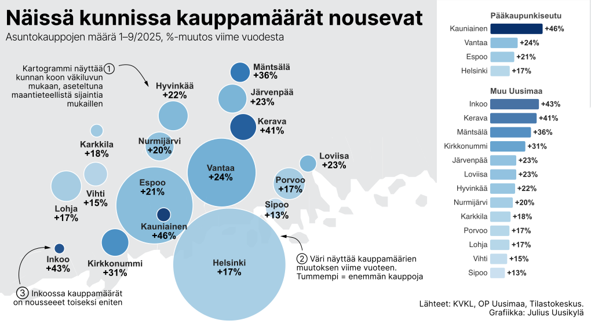

Asuntomarkkinoiden käänne on käynnissä. OP Uusimaan toimitusjohtaja Olli Lehtilä todistaa tilastoin, kuinka kovaa asuntokauppa vetää pääkaupunkiseudulla ja kehyskunnissa.
Lehtilän sanoin markkinatalous toimii: kauppa kasvaa, kun vanhojen asuntojen hinnat laskevat.
"Kauppahinta löytyy ja kysyntää syntyy. Kaupankäynti lisääntyy, koska nyt on oikea hetki ostaa", Lehtilä arvioi.
OP Pohjola kertoo erikseen, että piristyneen kysynnän ansiosta asuntoluottoja nostettiin tammi–syyskuussa 15,6 prosenttia enemmän kuin viime vuonna samaan aikaan.
Kolmannen kvartaalin kauppa on yhä vetänyt. Kiinteistönvälittäjien kautta vanhoja osakeasuntoja myytiin 7,0 prosenttia enemmän kuin vuotta aiemmin.

Toimitusjohtaja Lehtilä esittelee KVKL:n tilastoja, joissa on ynnätty tammi–syyskuun asuntokauppamääriä. Vuonna 2025 asuntokauppa on vetänyt erityisen vahvasti Inkoossa, Keravalla, Mäntsälässä, Kirkkonummella, Järvenpäässä ja Hyvinkäällä.
Tilastoista ilmenee, että asuntokauppa on käynyt huomattavan vilkkaasti Keravan (+86 %) ja Klaukkalan (+58 %) keskuksissa. Nummelassakin (+35 %) kauppa vetää vahvemmin kuin viime vuonna.
Kaikkiaan Uudenmaan asuntokauppojen määrä on lähes 20 prosenttia korkeampi kuin viime vuonna vastaavaan aikaan. Tammi–syyskuun tilanne on tämä, ja kasvun uskotaan jatkuvan tänä ja ensi vuonna.

Tein myös interaktiivisen version ilman pohjakarttaa
"Käynnissä on merkittävän iso muutos. Tilanne ei ole ollenkaan huono, koska kauppaa syntyy oikeaan hintatasoon", Lehtilä huomauttaa.
Uudenmaan Osuuspankissa asuntolainahakemusten määrä on tänä vuonna kasvanut yli neljä prosenttia. Myönnetyt asuntolainat ovat nekin kasvussa, ja OP Uusimaa on Suomen suurimpia asuntorahoittajia.
OP Uusimaan asuntoluottokanta kasvoi vuoden 2024 alusta yli 3,0 prosenttia. Se oli syyskuun lopussa jo 11,7 miljardia euroa.
"Markkinaosuutemme Suomen uusista asuntoluotoista oli tammi–elokuussa yli 14 prosenttia. Osuutemme osuuspankkien nostetuista asuntoluotoista oli yli 35 prosenttia", Lehtilä kertoo vahvistuvista luvuista.
"Alkuvuodesta asuntolainojen kysyntä piristyi selvästi, mutta kesän jälkeen asuntolainahakemusten määrä on jäänyt edellisvuosien tasolle. Ihmisillä on pelkoja työpaikan pysyvyydestä."
Kaikkien pankkien asuntoluottokannasta OP Uusimaan hallussa on noin 11 prosenttia. Se on selkeästi koko maassa operoivaa Danskea suurempi.
OP Pohjola on asuntorahoittamisen markkinajohtaja. Sillä on asuntolainoissa yli 39 prosentin markkinaosuus.
Kysynnän virkistymiseen viittaa sekin, että OP Uusimaan asuntolainan keskikoko on kasvanut Uudellamaalla lähes kymmenen prosenttia. Lainan keskikoko on pääkaupunkiseudulla yli 200 000 euroa.
"Hyvinkäällä, Järvenpäässä, Keravalla ja Kirkkonummella on kirjattu merkittävää kasvua myönnetyissä lainakappaleissa", Lehtilä kertoo.
Lehtilän mukaan nyt nostetaan aiempaa suurempia asuntoluottoja. Asiakkaat hoitavat lainansa säntillisesti, eikä tarvetta maksuohjelmien muutoksiin esiinny.
"Asuntokauppa herää myös Helsingissä, Espoossa ja Vantaalla. Markkinat toimivat aiempaa paremmin myös pääkaupunkiseudulla", Lehtilä arvelee.
OP:n ekonomistit ennustavat, että asuntojen hinnat kääntyvät nousuun. Ensi vuonna hinnat nousevat keskimäärin kolme prosenttia, ja tahti jatkuu vuonna 2027.
Koska korkotaso on vakiintunut kahden prosentin tuntumaan, se ei enää ole este asuntokauppojen synnylle. Uusien asuntoluottojen keskikorko on 2,8–2,9 prosenttia.
Asuntoluottojen viitekorkona yleisimmin käytetty 12 kuukauden euriborkorko oli syyskuun lopussa 2,19 prosenttia. Se on 0,55 prosenttiyksikköä viime vuoden vastaavaa aikaa alempana.
Markkinakorkojen lasku ja kotitalouksien käytettävissä olevien tulojen kasvu ovat tilastoidusti tukeneet asuntomarkkinoiden elpymistä.
Tähän Lehtilä lisää, että uusien asuntojen kauppa käy yhä nihkeästi. Samaan aikaan rakennusliikkeet kuitenkin valmistautuvat kysynnän käänteeseen.
"Rakentaminen on heräilemässä. Asunto-osakeyhtiöiden rakentamisessa rs-rahoituksen tarjouspyyntöjen volyymi on nyt yli puolitoistakertainen verrattuna koko vuoteen 2024", Lehtilä kertoo.